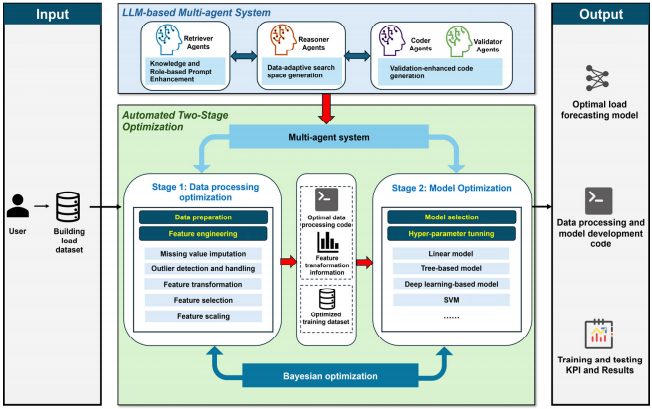
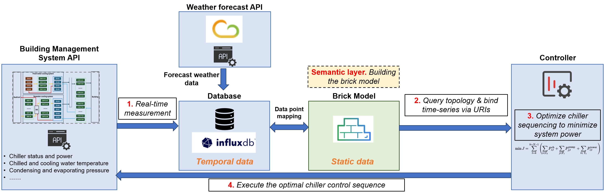

About
I am an MPhil student in Civil Engineering at The Hong Kong University of Science and Technology (HKUST), where I am honored to be a recipient of the HKUST RedBird PhD Recruitment Award.
My research focuses on the application of Artificial Intelligence (AI) in smart building control. Specifically, I explore Model Predictive Control (MPC), Deep Reinforcement Learning (DRL), and Large Language Models (LLMs) to optimize building energy performance, chiller sequencing, and operational automation.
I aim to bridge the gap between advanced computational algorithms and real-world engineering deployment. I developed a data-driven MPC framework that achieved 11.52% energy savings in a Shanghai commercial complex, and created AutoLFM, a multi-agent LLM framework for automated building load forecasting.
Featured Works


Latest News
Led my team to win the Silver Award (Sustainability & ESG Track) at the Hong Kong Techathon+ 10th Anniversary Edition. [Award List]
Honored to receive the HKUST RedBird PhD Recruitment Award, recognizing academic excellence with a full tuition fee waiver and HK$40,000.
Published multiple papers in top-tier journals including Energy and Buildings, Building Simulation, and Automation in Construction.
Publications
For a full list of papers, please visit my Google Scholar .
First Author
, Zheng, W., Li, M., Xing, S., & Wang, Z. (2026). AutoLFM: A multi-agent LLM framework for automated building load forecasting. Building Simulation. [IF=5.9]
, Li, M., Hu, Z., & Wang, Z. (2025). Applying semantic model for easy and fast deployment of chiller sequencing algorithm. Energy and Buildings, 116830. [IF=7.3]
, Li, S., Mohebi, P., Wang, D., Ma, M. N., Liu, G., & Wang, Z. (2025). Field demonstration of model predictive control for chiller sequencing in large-scale commercial buildings. Energy and Buildings, 116021. [IF=7.3]
, Su, S., & Lin, X. (2025). Optimizing the hyper-parameters of deep reinforcement learning for building control. Building Simulation (Vol. 18, No. 4, pp. 765-789). [IF=5.9]
, Li, S., & Wang, Z. (2024). Accelerating chiller sequencing using dynamic programming. Energy and Buildings, 325, 115037. [IF=7.3]
Co-Author
Mohebi, P., , & Wang, Z. (2025). Chance-constrained stochastic framework for building thermal control under forecast uncertainties. Energy and Buildings, 331, 115385.
Zheng, W., Liu, L., , Zhang, Z., Zhao, P., Li, T., ... & Wang, Z. (2026). Smart predict-then-optimize-based model predictive control for Virtual Power Plants with battery storage. Journal of Energy Storage, 142, 119606.
Li, M., Hu, Z., Mohebi, P., , & Wang, Z. (2026). Enhancing LLM-based building data query with chain-of-thought, retrieval-augmented generation, and fine-tuning. Automation in Construction, 182, 106738.
Su, S., , Ding, Y., Mao, P., & Chong, D. (2024). Health damage assessment of commuters and staff in the metro system based on field monitoring—A case study of Nanjing. Frontiers in Public Health, 11, 1305829.
Education
Hong Kong University of Science and Technology
M.Phil. in Civil Engineering
Southeast University
Bachelor in Intelligent Building
National Scholarship (Top 0.2%)